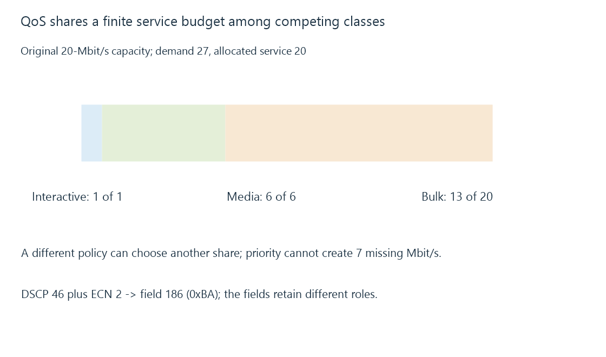

Quality of service, classification and scheduling
Quality-of-service policy classifies traffic and schedules limited service, with markings and priority meaningful only under the policies that interpret them.
A congested path must choose which work receives its limited service. Quality of service, or QoS, describes classification and handling policies used to make those choices.
A policy can improve one use’s delay or share. It cannot create the capacity that the path lacks.
A class allocation spends one finite budget
Use this original twenty-Mbit/s service model:
{
"capacityMbitPerSecond": 20,
"classes": [
{"name": "interactive", "demand": 1, "allocation": 1},
{"name": "media", "demand": 6, "allocation": 6},
{"name": "bulk", "demand": 20, "allocation": 13}
]
}
The demands total twenty-seven; allocations total twenty. The stated policy serves interactive and media demand while the bulk class receives thirteen of its requested twenty.

Another policy can distribute the shortfall differently. Its desired result depends on the intended classes and operations.
Priority needs a bounded interpretation
Strict priority for a high-demand class can leave lower classes without service. If the first class alone continuously offers more than the link can serve, a priority label does not preserve a guaranteed share for everyone else.
Weighted or reserved service policies express another design, with their own admission and scheduling conditions.
For a remote Emby presentation, one bulk file operation and one interactive control message can need different handling. The appropriate policy still has to identify their actual traffic at its enforcement point.
Markings identify a requested class
The Differentiated Services field includes a six-bit DSCP and separate ECN bits.
An original field exercise chooses DSCP forty-six and ECN value two:
(46 << 2) | 2 = 186 = 0xBA
The ECN bits are not another part of the DSCP number. The cited Expedited Forwarding reference supplies a defined behavior context for its codepoint.
A marker in a packet does not prove that every gateway, ISP or wireless link honors the same policy. Boundaries can ignore, rewrite or classify it differently.
Classification is an implementation decision
Rules can use endpoints, protocols, application context or other available evidence. Encryption can limit direct payload inspection; a port number alone can group several distinct operations.
Classifying all HTTPS as “video” can therefore miss other uses and combine unrelated demand.
Flow scheduling and queue management can add another distinction within a class. Bufferbloat explains why low-delay handling also needs the work waiting ahead considered.
See Also
- Network congestion and competing arrival rates
- Bufferbloat and standing queue delay
- Upload bandwidth and simultaneous remote streams